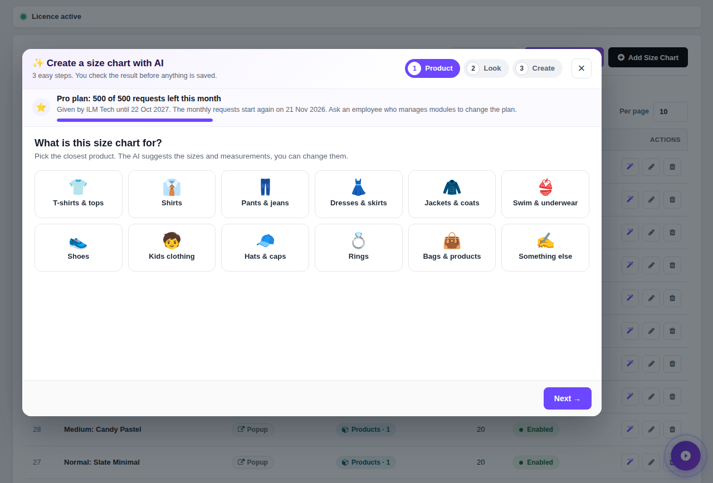
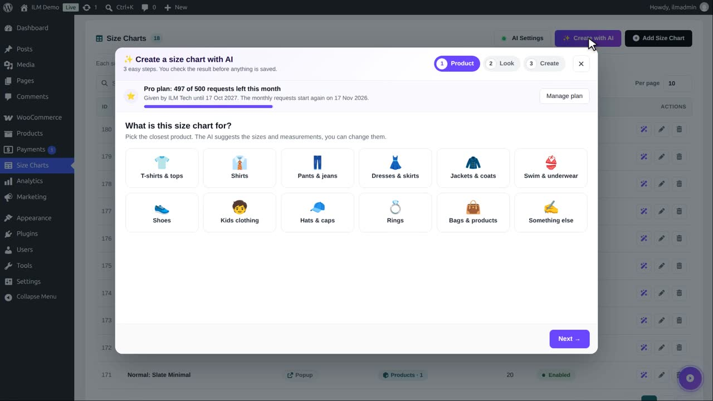
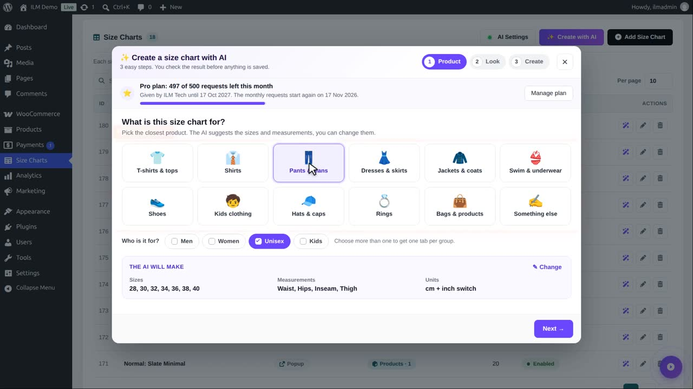
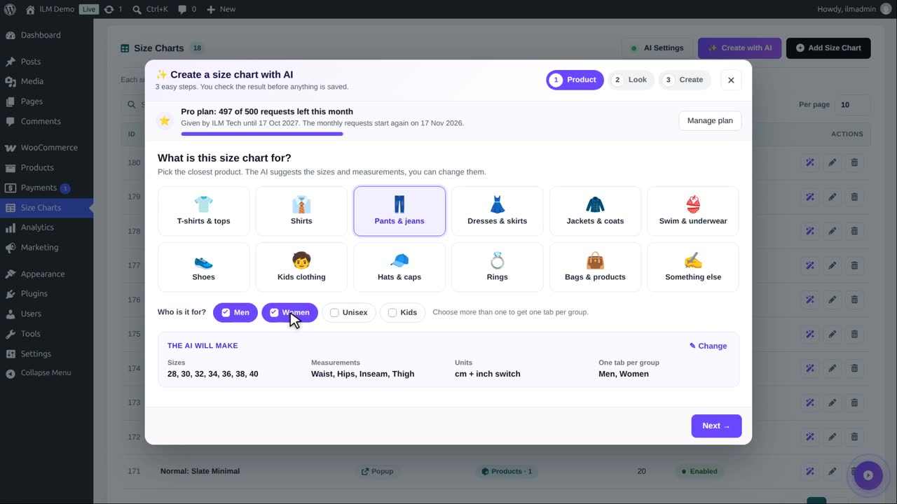
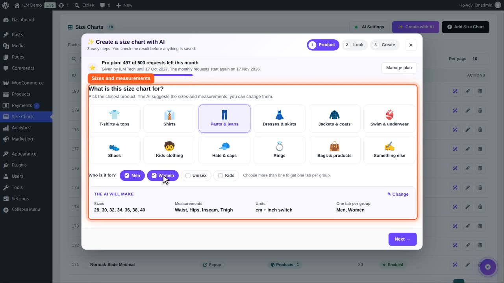
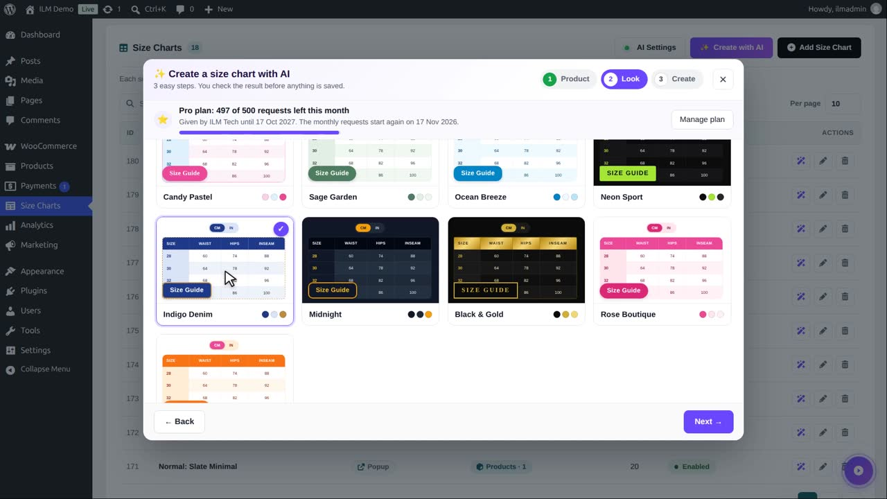
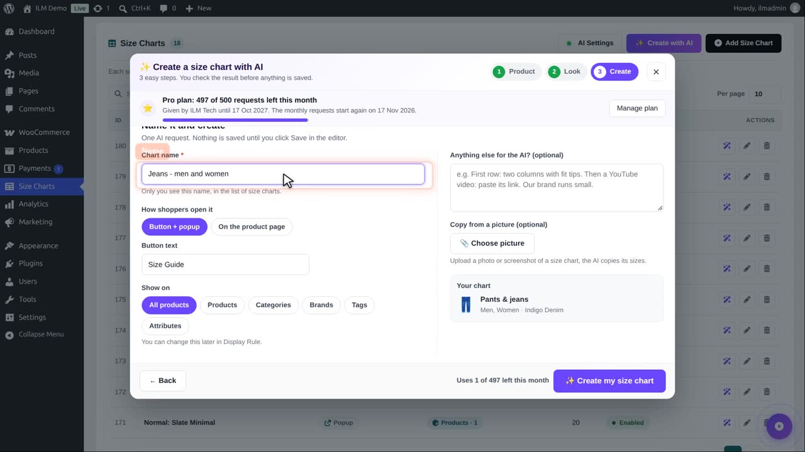
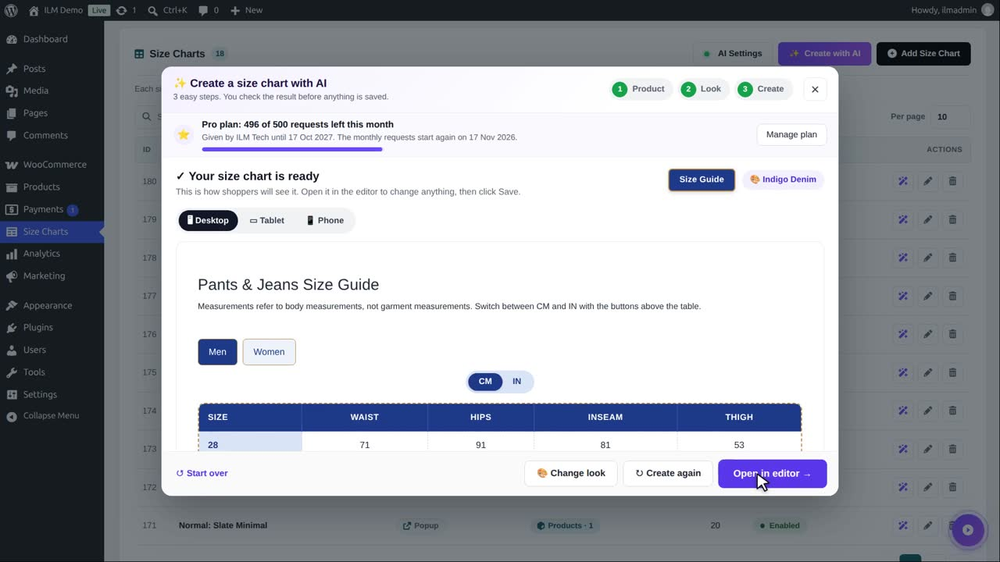
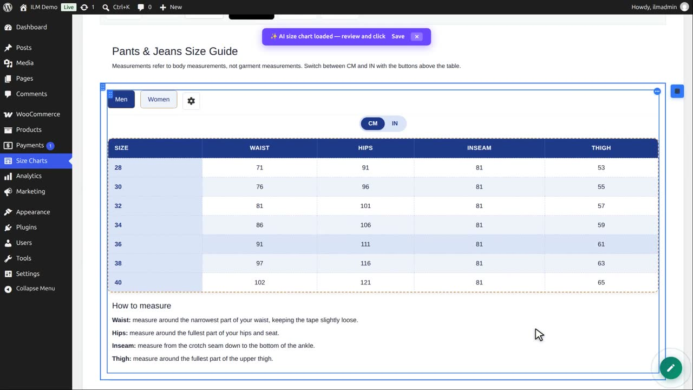

Click Create with AI above the size chart list. Three steps, and one AI request:
The AI needs about 20 to 60 seconds. You then see the chart as shoppers will see it, on desktop, tablet or phone; Open in editor loads it into the designer, where you change anything and click Save.

The AI chart builder with the steps Product, Look and Create.
On the size chart list, click Create with AI. Three easy steps, and you check the result before anything is saved.

Step one: what is the chart for? We choose Pants and jeans.

Who is it for: Men and Women. With two groups you get one tab per group.

Below, you see what the AI will make: the sizes, the measurements and the units. Each can be changed.

Next. Step two: pick a look. We choose Indigo Denim. A tick can style the size guide button and the popup to match.

Next. Step three: name it. Create uses one AI request.

Click Create. After a moment the chart is ready: men and women tabs, with real sizes and measurements in centimetres and inches.

Open in editor puts it in a new chart form. Check the values, change anything in the designer, add a display rule, and save.

Nothing is saved until you click Save, so you can try again or start over at any time.